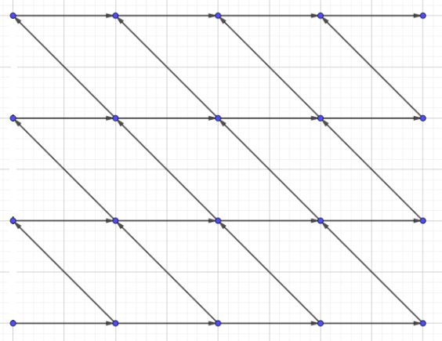

点到点的方案数
从 \((x_1,y_1)\) 只能向右、向下走到 \((x_2,y_2)\) 的方案数：\(C_{x_2-x_1+y_2-y_1}^{x_2-x_1}\)。就是说，因为必须向下走 \(x_2-x_1\) 步，又必须向右走 \(y_2-y_1\) 步；但顺序是可以任意打乱的。
A - Gerald and Giant Chess
https://codeforces.com/problemset/problem/560/E
把不能走的点按 \(x\) 为第一关键字，\(y\) 为第二关键字排序，就可以得到它们按大致拓扑序排列的结果。
令 \(f_i\) 表示不经过 \(1\sim i-1\) 的非法点走到第 \(i\) 个非法点的方案数，就可以得到 \(f_i=C_{x_i+y_i,x_i}-\sum_{j=1}^{i-1} f_j\times C_{x_i-x_j+y_i-y_j}^{x_i-x_j}\)。可以发现后面减去的方案，因为碰到的第一个非法点不同，所以是两两不同的。
让 \((h,w)\) 成为第 \((n+1)\) 个非法点，\(f_{n+1}\) 就是答案。
#include <bits/stdc++.h>
const int mod = 1e9 + 7;
int main() {
#ifdef ONLINE_JUDGE
std::ios::sync_with_stdio(false);
std::cin.tie(nullptr), std::cout.tie(nullptr);
#else
std::freopen(".in", "r", stdin);
std::freopen(".out", "w", stdout);
#endif
int h, w, n;
std::cin >> h >> w >> n, --h, --w;
std::vector<std::pair<int, int> > a(n + 2);
for (int i = 1; i <= n; ++i) {
std::cin >> a[i].first >> a[i].second;
--a[i].first, --a[i].second;
}
a[n + 1] = { h, w };
std::sort(a.begin() + 1, a.end());
std::vector<long long> fac(h + w + 1), inv(h + w + 1);
fac[0] = inv[0] = 1ll;
for (int i = 1; i <= h + w; ++i)
fac[i] = fac[i - 1] * i % mod;
auto qkp = [](long long x, int y) {
auto res = 1ll;
for (; y; (x *= x) %= mod, y >>= 1)
if (y & 1)
(res *= x) %= mod;
return res;
};
inv[h + w] = qkp(fac[h + w], mod - 2);
for (int i = h + w - 1; i; --i)
inv[i] = inv[i + 1] * (i + 1) % mod;
auto C = [&](int n, int m) {
return fac[n] * inv[n - m] % mod * inv[m] % mod;
};
std::vector<long long> f(n + 2);
for (int i = 1; i <= n + 1; ++i) {
f[i] = C(a[i].first + a[i].second, a[i].first);
for (int j = 1; j < i; ++j)
if (a[j].second <= a[i].second)
(f[i] += mod - f[j] * C(a[i].first - a[j].first + a[i].second - a[j].second, a[i].first - a[j].first) % mod) %= mod;
// printf("f[(%d, %d)] = %lld\n", a[i].first, a[i].second, f[i]);
}
std::cout << f[n + 1] << '\n';
return 0;
}B - BBQ Hard
https://atcoder.jp/contests/agc001/tasks/agc001_e
不仅仅可以在关键点上 DP，也可以在网格上直接 DP。
\(A_i+B_i+A_j+B_j\) 就是 \(A_i+B_i-(-A_j)-(-B_j)\)。把棋盘扩大到 \(-2000\to 2000\) 就可以了。
设 \(f_{i,j}\) 表示可以到达 \((i,j)\) 的所有发出关键点 \((-A_j,-B_j)\) 带来的贡献，那么 \(f_{i,j}=f_{i-1,j}+f_{i,j-1}\)。枚举所有接收关键点 \((A_i,B_i)\)，\(\sum f_{A_i,B_i}\) 就是答案的两倍，再减去对角线，也就是 \(\sum (-A_i,B_i)\to (A_i,B_i)\) 后的值。
#include <bits/stdc++.h>
const int N = 2000;
const int mod = 1e9 + 7;
const int inv2 = 500000004;
int main() {
#ifdef ONLINE_JUDGE
std::ios::sync_with_stdio(false);
std::cin.tie(nullptr), std::cout.tie(nullptr);
#else
std::freopen(".in", "r", stdin);
std::freopen(".out", "w", stdout);
#endif
int n;
std::cin >> n;
std::vector<long long> fac(4 * N + 1), inv(4 * N + 1);
fac[0] = inv[0] = 1ll;
for (int i = 1; i <= 4 * N; ++i)
fac[i] = fac[i - 1] * i % mod;
auto qkp = [](long long x, int y) {
auto res(1ll);
for (; y; (x *= x) %= mod, y >>= 1)
if (y & 1)
(res *= x) %= mod;
return res;
};
inv[4 * N] = qkp(fac[4 * N], mod - 2);
for (int i = 4 * N - 1; i; --i)
inv[i] = inv[i + 1] * (i + 1) % mod;
std::vector<std::pair<int, int> > a(n + 1);
std::vector<std::vector<long long> > f(2 * N + 1, std::vector<long long> (2 * N + 1));
for (int i = 1; i <= n; ++i) {
std::cin >> a[i].first >> a[i].second;
++f[N - a[i].first][N - a[i].second];
}
for (int i = 0; i <= 2 * N; ++i)
for (int j = 0; j <= 2 * N; ++j) {
if (i >= 1)
(f[i][j] += f[i - 1][j]) %= mod;
if (j >= 1)
(f[i][j] += f[i][j - 1]) %= mod;
// printf("f(%2d, %2d) = %lld\n", i - N, j - N, f[i][j]);
}
long long res = 0ll;
auto C = [&](int n, int m) {
return fac[n] * inv[n - m] % mod * inv[m] % mod;
};
for (int i = 1; i <= n; ++i) {
(res += f[a[i].first + N][a[i].second + N]) %= mod;
(res += mod - C(a[i].first * 2 + a[i].second * 2, 2 * a[i].first)) %= mod;
}
std::cout << res * inv2 % mod << '\n';
return 0;
}C - Iroha and a Grid
https://atcoder.jp/contests/arc058/tasks/arc058_b
先把绿色部分的答案计算出来：
如果把绿色的每一个格子到终点的方案数求和，就会算重，因为上面的绿色点可以走到下面的绿色点。
让绿色点第一步只能往右走到黄色点，用这样的方案为黄色点赋初值，再让黄色点自由走就可以得到答案了。
#include <bits/stdc++.h>
const int mod = 1e9 + 7;
int main() {
#ifdef ONLINE_JUDGE
std::ios::sync_with_stdio(false);
std::cin.tie(nullptr), std::cout.tie(nullptr);
#else
std::freopen(".in", "r", stdin);
std::freopen(".out", "w", stdout);
#endif
int h, w, a, b;
std::cin >> h >> w >> a >> b;
std::vector<long long> fac(h + w + 1), inv(h + w + 1);
fac[0] = inv[0] = 1ll;
for (int i = 1; i <= h + w; ++i)
fac[i] = fac[i - 1] * i % mod;
auto qkp = [](long long x, int y) {
auto res(1ll);
for (; y; (x *= x) %= mod, y >>= 1)
if (y & 1)
(res *= x) %= mod;
return res;
};
inv[h + w] = qkp(fac[h + w], mod - 2);
for (int i = h + w - 1; i; --i)
inv[i] = inv[i + 1] * (i + 1) % mod;
auto C = [&](int n, int m) {
return fac[n] * inv[n - m] % mod * inv[m] % mod;
};
auto res = 0ll;
for (int i = 1; i <= h - a; ++i) {
// (i, B)
auto f(C(i + b - 2, i - 1));
// printf("(%d, %d): %lld\n", i, b, f);
// (i, B + 1)
(res += f * C(h - i + w - (b + 1), h - i) % mod) %= mod;
}
std::cout << res << '\n';
return 0;
}点到矩形的方案数
从 \((x_0,y_0)\) 走到矩形 \((x_1,y_1,x_2,y_2)\) 的方案数：
\[ \sum\limits_{i\in [x_1,x_2],j\in [y_1,y_2]} G(x_0,y_0, i, j) = G(x_0,y_0,x_2 + 1,y_2 + 1)-G(x_0,y_0,x_2+1,y_1)-G(x_0,y_0,x_1,y_2+1)+G(x_0,y_0,x_1,y_1) \]
证明：\(G(x_0,y_0,x_2+1,y_2+1)=\sum\limits_i G(x_0,y_0,i,y_2)=\sum\limits_{i,j} G(x_0,y_0,i,j)\)，类似的，把后面几项展开，可以得到前缀和的结构。
现在，矩形就可以被概括成 4 个点了。
矩形到矩形的方案数
枚举第一个矩形里的所有点，那么就可以得到关于第二个矩形里四个点的表达式。反过来把第一个矩形概括为 4 个点就可以快速求解了。
具体一点，第一个矩形 \((x_1,y_1,x_2,y_2)\) 可以被概括为 \((x_1-1,y_1-1)\)，\((x_1-1,y_2)\)，\((x_2,y_1-1)\)，\((x_2,y_2)\)。注意方向颠倒导致符号发生变化。此时对 \(4\times 4=16\) 个 \(G\) 按对应的 \(-1/1\) 系数求和就能得到答案。
D - Sightseeing Plan
https://atcoder.jp/contests/agc018/tasks/agc018_e
- 恒等式：\(\sum\limits_{i\in [x_1,x_2]}G_(x_1,y_1,i,y_2-1)=G(x_1,y_1,x_2,y_2)\)，放在网格图上就是强制走到 \((i,y_2-1)\)，再强制向右走一步，然后向上走到 \((x_2,y_2)\)。和上一题类似的，可以发现不重不漏。
- 三个矩形，\(M_1\) 经过 \(M_2\) 到达 \(M_3\) 的路径数量：经过 \(M_2\) 时，根据限制，只可能从下面或左边进入。枚举进入的点 \((x_0,y_0)\)（数量为 \(O(n)\)），再计算 \(G(x_0,y_0,M_3)\) 就能得到不重不漏的答案。
- 原问题：要求 \(M_2\) 内部路径上点的贡献和，这个其实就是 \(M_2\) 内部路径长度。若从 \((x_1,y_1)\) 进入，再从 \((x_2,y_2)\) 离开，长度就是 \(x_2-x_1+y_2-y_1+1\)。拆成 \((x_2+y_2+1)\) 和 \(-(x_1+y_1)\) 后发现一次进入和一次离开的贡献是独立的。分别枚举进入点和离开点计算贡献就可以了。
#include <bits/stdc++.h>
const int N = 2e6;
const int mod = 1e9 + 7;
int main() {
#ifdef ONLINE_JUDGE
std::ios::sync_with_stdio(false);
std::cin.tie(nullptr), std::cout.tie(nullptr);
#else
std::freopen(".in", "r", stdin);
std::freopen(".out", "w", stdout);
#endif
int x1, x2, x3, x4, x5, x6, y1, y2, y3, y4, y5, y6;
std::cin >> x1 >> x2 >> x3 >> x4 >> x5 >> x6;
std::cin >> y1 >> y2 >> y3 >> y4 >> y5 >> y6;
std::vector<long long> fac(N + 1), inv(N + 1);
fac[0] = inv[0] = 1ll;
for (int i = 1; i <= N; ++i)
fac[i] = fac[i - 1] * i % mod;
auto qkp = [](long long x, int y) {
auto res(1ll);
for (; y; (x *= x) %= mod, y >>= 1)
if (y & 1)
(res *= x) %= mod;
return res;
};
inv[N] = qkp(fac[N], mod - 2);
for (int i = N - 1; i; --i)
inv[i] = inv[i + 1] * (i + 1) % mod;
auto C = [&](int n, int m) {
return fac[n] * inv[n - m] % mod * inv[m] % mod;
};
std::vector<std::tuple<int, int, int> > f(4), g(4);
f[0] = { x1 - 1, y1 - 1, 1 }, f[1] = { x1 - 1, y2, mod - 1 }, f[2] = { x2, y1 - 1, mod - 1 }, f[3] = { x2, y2, 1 };
g[0] = { x5, y5, 1 }, g[1] = { x5, y6 + 1, mod - 1 }, g[2] = { x6 + 1, y5, mod - 1 }, g[3] = { x6 + 1, y6 + 1, 1 };
auto G = [&](int x1, int y1, int x2, int y2) {
auto a(std::abs(x1 - x2)), b(std::abs(y1 - y2));
return C(a + b, a);
};
auto res = 0ll;
for (auto [x1, y1, k1] : f)
for (auto [x2, y2, k2] : g) {
auto t(0ll);
for (int x = x3; x <= x4; ++x) {
(t += G(x1, y1, x, y4) * G(x, y4 + 1, x2, y2) % mod * (x + y4 + 1) % mod) %= mod;
(t += mod - G(x1, y1, x, y3 - 1) * G(x, y3, x2, y2) % mod * (x + y3) % mod) %= mod;
}
for (int y = y3; y <= y4; ++y) {
(t += G(x1, y1, x4, y) * G(x4 + 1, y, x2, y2) % mod * (x4 + y + 1) % mod) %= mod;
(t += mod - G(x1, y1, x3 - 1, y) * G(x3, y, x2, y2) % mod * (x3 + y) % mod) %= mod;
}
// printf("(%d, %d, %d), (%d, %d, %d): %lld\n", x1, y1, k1, x2, y2, k2, t * k1 % mod * k2 % mod);
(res += t * k1 % mod * k2 % mod) %= mod;
}
std::cout << res << '\n';
return 0;
}不经过 \(y=x+c\) 的方案数
Catalan 数的一种推导方式是，在 \(n\times n\) 的网格上，要求不能越过 \(y=x\) 的方案数。可以用总方案数减去越过的方案数。
怎么计算非法的方案呢？越过 \(y=x\) 的路径必定存在一个点经过 \(y=x+1\)，原问题转化为不能碰到 \(y=x+1\) 的方案数。
把终点 \((n, n)\) 翻折到 \(y=x+1\) 上方，得到 \((n-1, n + 1)\)；对于任意到达 \((n-1,n+1)\) 的路径，一定会接触 \(y=x+1\) 至少一次；将第一次接触以后的路径翻折到 \(y=x+1\) 下方，则一定和原图中的非法路径一一对应。
就可以得到 \(C_{2n}^n-C_{2n}^{n-1}\)。
如果问题变得更加一般，求解到达 \((n, m)\) 不能碰到 \(y=x+c\) 的方案数，还是可以把 \((n,m)\) 翻折到 \((m-c,n+c)\)，答案是 \(C_{n+m}^n-C_{n+m}^{m-c}\)。
不经过 \(y=x-l\) 和 \(y=x+r\) 的方案数
现在有 \(y=x-l\) 和 \(y=x+r\) 两条线作为限制，现在的翻折意义就会有一点改变。
比如图中的 \(A'\)，是 \(A\) 沿着 \(y=x-l\) 翻折一次后的结果。还是按照之前的方式来理解，那么走到 \(A'\) 的路径代表至少经过一次 \(y=x-l\) 的方案。\(A''\) 是 \(A'\) 沿着 \(y=x+r\) 翻折一次之后得到的结果，走到 \(A''\) 的路径就代表至少先碰到一次 \(y=x-l\)，再碰到一次 \(y=x+r\) 的方案数。
如果把相邻多次碰到 \(y=x-l\) 或 \(y=x+r\) 合并为一次，最终的非法路径就是 LRLRLR... 或者 RLRLRL... 的形式。因为可以计算的是「至少」的形式，用容斥原理得到，答案是 \(f_{\varnothing}-(f_{\texttt L} + f_{\texttt R}) + (f_{\texttt {LR}} + f_{\texttt {RL}}) - \cdots\)。对应计算每个翻折对应终点和答案就可以了。最后的答案是 \(C_{n+m}^n-C_{n+m}^{n+l}-C_{n+m}^{n + r}+C_{n+m}^{n+l-r}+C_{n+m}^{n+r-l}-\cdots\)，可以简化成 \(\sum\limits_{k\in \mathbb{Z}} C_{n+m}^{n-k\cdot (r-l)}-C_{n+m}^{n-k\cdot (r-l)+r}\)。
E - 骗我呢
https://www.luogu.com.cn/problem/P3266
每行内部递增，而且选项只有 \([0,m]\)，那么每行就会刚好在 \([0,m]\) 里面跳过一个数。
如果第 \(i\) 行跳过的数是 \(j\)，那么画一画图就可以发现第 \(i+1\) 可能跳过的数是 \([j-1,m]\)；反过来，第 \(i-1\) 行可能跳过的数就是 \([0,j+1]\)。
如果让 \(f_{i,j}\) 表示确定了第 \(1\to i\) 行，其中第 \(i\) 行跳过 \(j\) 的方案数，就可以得到 \(f_{i,j}=\sum\limits_{k=0}^{j+1} f_{i-1,k}\)。前缀和得到 \(f_{i,j}=f_{i,j-1}+f_{i-1,j+1}\)。注意边界：\(f_{0,j}=1\)；\(f_{i,0}=f_{i-1,0}+f_{i-1,1}\)；\(f_{i,m}=f_{i,m-1}\)。
为了得到答案，让 \(g_{i,j}\) 表示 \(i\times j\) 矩阵的方案数（这样就有机会通过手段优化了）：
\[ \begin{aligned} g_{i,j}&=\sum_{k=0}^j f_{i,k}\\ &= f_{i-1,0}+f_{i-1,1}+\sum_{k=1}^j f_{i,k-1}+f_{i-1,k+1}\\ &= g_{i,j-1}+g_{i-1,j+1} \end{aligned} \]
边界情况呢， \(g_{i, 0} = f_{i,0} = f_{i-1, 0} + f_{i - 1, 1} = g_{i-1,1}\)；\(g_{i,m}=g_{i, m - 1} + f_{i,m}=g_{i-1,m}+g_{i,m-1}\)。 \(g_{i,m+1}=g_{i,m}\) 避免边界。
那么在网格图上转移如下：

考虑将这个图形拉正，令 \((i+i,j)\gets g_{i,j}\) 得到：
问题就转化为，从 \((0, 0)\) 走到 \((m+n+1,n)\) 且不能触碰 \(y=x+1\) 和 \(y=x-m-2\) 两条直线的方案数。
不经过一般过原点直线的方案数
类型一：\((0,0)\to (n,m)\)，不经过 \(y=\dfrac mnx\) 的方案，其中要求 \((m,n)=1\)。
方案为 \(\dfrac {C_{n+m}^n}{n+m}\)。